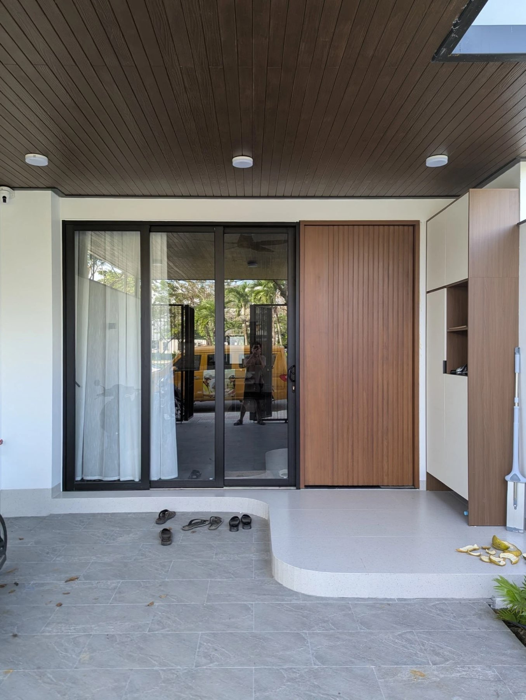
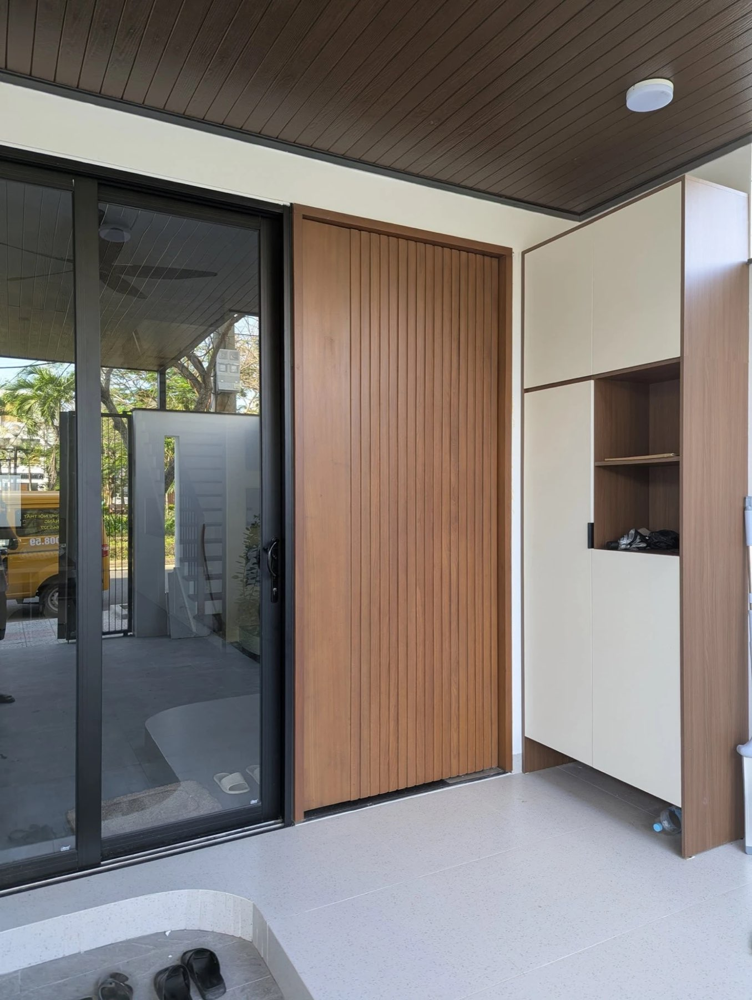
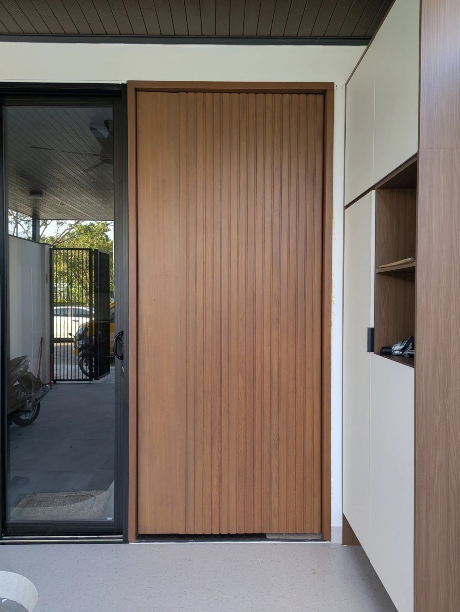
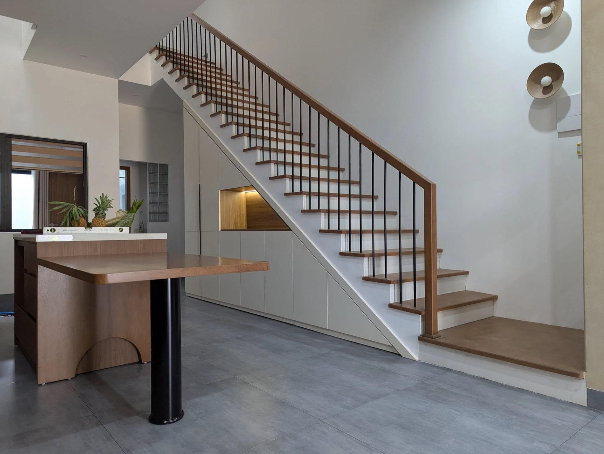
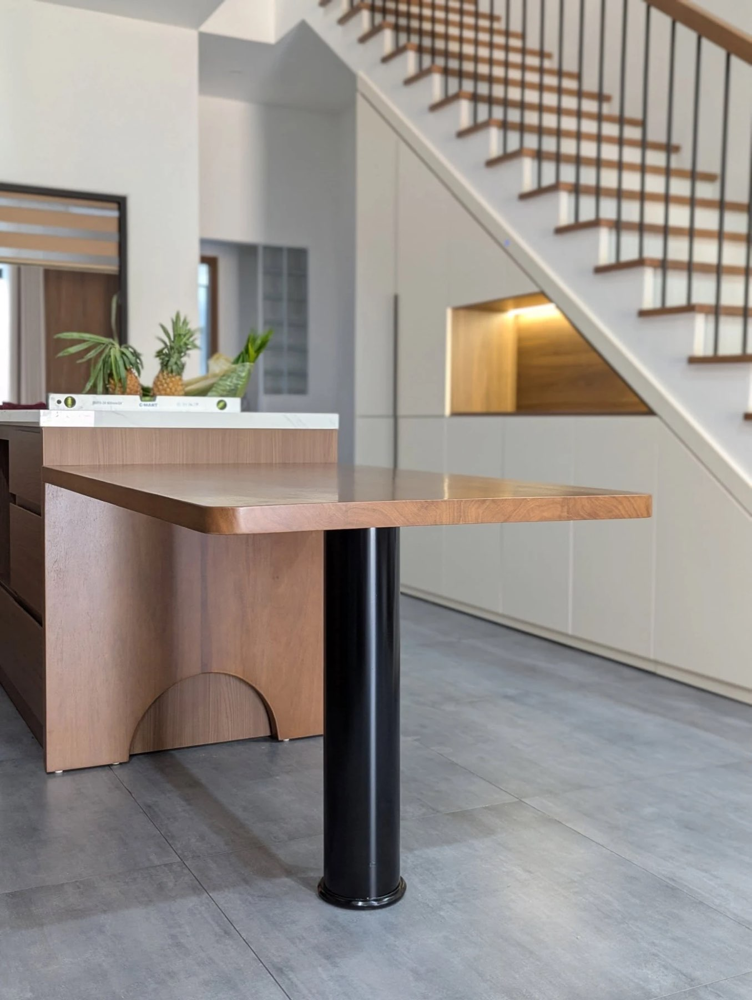

Cửa và cầu thang gỗ Kiền Kiền
- Hạng mục
- Cửa gỗ
- Địa điểm
- Hoà Xuân, Đà Nẵng
- Năm
- 2025
- Trạng thái
- Hoàn thành
Cửa chính xoay trục gỗ Kiền Kiền phối lam đứng, bản lề sàn, đồng bộ tủ giày; cầu thang mặt bậc và tay vịn gỗ Kiền Kiền, lan can sắt sơn đen; mặt bàn đảo bếp gỗ Kiền Kiền bo cạnh





Dự án cùng hạng mục